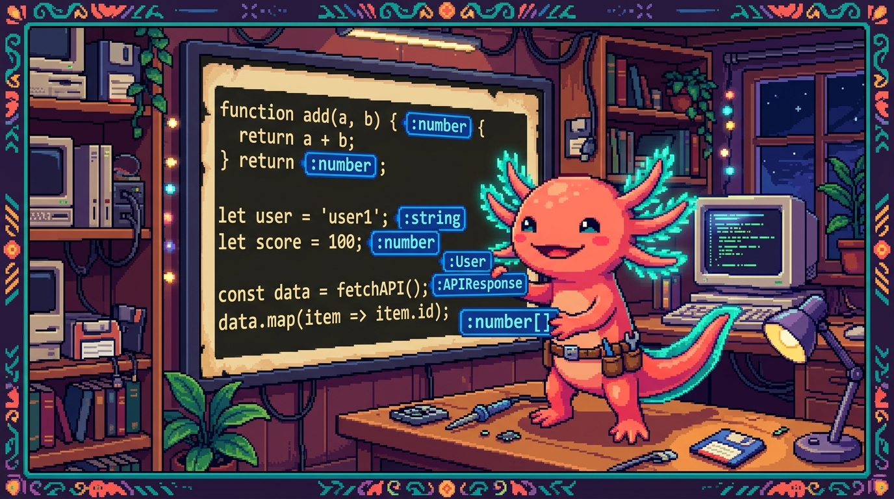

Capítulo 01 — ¿Qué es TypeScript?

Este módulo es corto y muy rentable: TypeScript es JavaScript que ya conoces, más una "red de seguridad". Entender el porqué es la mitad del trabajo; la otra mitad es sintaxis sencilla.
1. El problema que resuelve TypeScript
Hay un detalle de JavaScript que conviene tener fresco: una variable puede guardar cualquier cosa y cambiar de tipo cuando le da la gana, sin avisarte. Eso da mucha libertad, pero también abre la puerta a errores que luego cuesta cazar. Míralo aquí:
function precioConIva(precio) {
return precio * 1.13;
}
precioConIva("100"); // en JavaScript no se queja… y da un resultado raro
Le pasaste el texto "100" en lugar del número 100, y JavaScript ni se inmuta. No salta ningún
error en ese momento. El fallo aparece más tarde, normalmente en producción, y cuando vas a
buscarlo se te va medio día encontrándolo.
🟦 ¿Qué significa? — Tipo (type)
El tipo de un dato es la clase de información que es: texto (
string), número (number), booleano (boolean), etc. Ya te los cruzaste en JS y en Python. En JavaScript los tipos existen, pero el lenguaje no te obliga a respetarlos: tú verás. TypeScript sí te obliga.🟦 ¿Qué significa? — TypeScript
TypeScript es JavaScript más un sistema de tipos: te deja declarar de qué tipo es cada cosa, y revisa tu código antes de ejecutarlo para avisarte si metes la pata (por ejemplo, si pasas un texto donde tocaba un número).
typescript function precioConIva(precio: number) { // ': number' declara el tipo return precio * 1.13; } precioConIva("100"); // ❌ TypeScript marca error aquí mismo, antes de ejecutar
2. La idea clave: errores temprano, no tarde
💡 Tip — "Shift left": atrapar el error cuanto antes
Cuanto antes pillas un error, más barato sale arreglarlo. Un error que TypeScript te subraya en rojo mientras escribes te cuesta unos segundos. Ese mismo error, descubierto por un cliente en producción, te cuesta horas y un poco de tu reputación. Lo que hace TypeScript es adelantar la detección "hacia la izquierda" en el tiempo: del usuario final a tu teclado.
🟦 ¿Qué significa? — Tipado estático vs. dinámico
- Dinámico (JavaScript, Python): los tipos se revisan al ejecutar. Muy flexible, pero los errores asoman tarde.
- Estático (TypeScript): los tipos se revisan antes de ejecutar, al escribir o compilar. Más seguro. "Estático" quiere decir comprobado de antemano, sin tener que correr el programa.
3. TypeScript es un "superset" de JavaScript
🟦 ¿Qué significa? — Superset (superconjunto)
Un superset es un lenguaje que contiene a otro entero y le añade cosas encima. TypeScript mete todo JavaScript dentro y le suma los tipos. Y esto tiene una consecuencia muy cómoda: todo tu JavaScript ya es TypeScript válido. Puedes ir adoptándolo poco a poco, poniendo tipos donde te apetezca y dejando el resto como está. No tiras nada de lo que aprendiste en el Módulo 03; simplemente lo amplías.
4. Los navegadores no entienden TypeScript: la compilación
🟦 ¿Qué significa? — Compilar (transpilar)
Los navegadores solo saben ejecutar JavaScript, TypeScript no lo entienden. Así que, antes de usarlo, el código
.tsse compila (o "transpila"): un programa lo traduce a JavaScript normal y le quita las anotaciones de tipo por el camino. Compilar es eso, traducir código de una forma a otra que la máquina sepa ejecutar.archivo.ts ──(compilador de TypeScript)──► archivo.js ──► el navegador lo ejecutaMientras traduce, el compilador repasa los tipos y te avisa de los errores. Las herramientas modernas (como Vite, que usa RachaSimple) se encargan de todo esto solas mientras programas; no tienes que lanzar nada a mano.🟦 ¿Qué significa? — Las extensiones
.tsy.tsx
.ts→ un archivo de TypeScript normal y corriente..tsx→ TypeScript que además lleva JSX dentro (la sintaxis de React para escribir interfaz; la verás en el Módulo 06). Por eso los componentes de RachaSimple y Faro acaban en.tsx.
5. Tu primera anotación de tipo
La sintaxis es de lo más simple: tras el nombre, dos puntos : y el tipo.
let nombre: string = "Edwar";
let edad: number = 25;
let activo: boolean = true;
Si intentas guardar algo del tipo que no toca, TypeScript protesta al momento:
let edad: number = 25;
edad = "veintiséis"; // ❌ Error: el tipo 'string' no se puede asignar a 'number'
💡 Tip — El editor se vuelve tu copiloto
Con TypeScript, VS Code hace más que marcarte errores: también autocompleta mucho mejor (sabe qué propiedades tiene cada cosa) y te enseña la "forma" de los datos con solo pasar el cursor por encima. Esa ayuda constante, todo el rato, es una de las razones de peso por las que equipos enteros se pasan a TypeScript.
✅ Checklist — ¿ya domino esto?
- [ ] Entiendo qué problema resuelve TypeScript (errores de tipo que JS no atrapa).
- [ ] Sé qué es un tipo y la diferencia entre tipado estático y dinámico.
- [ ] Entiendo que TypeScript es un superset: todo mi JavaScript ya es válido.
- [ ] Sé que el
.tsse compila a.jsy que ahí se revisan los tipos. - [ ] Distingo
.tsde.tsx(este último con JSX de React). - [ ] Sé anotar una variable con
: tipo.
🧪 Ejercicios
- El porqué. Explica, con el ejemplo del IVA, por qué pasar
"100"(texto) a una función de precios es un problema que TypeScript evita y JavaScript no. - Estático o dinámico. Clasifica: JavaScript, Python, TypeScript. ¿Cuál revisa los tipos antes de ejecutar?
- Superset. ¿Es verdad que tu código JavaScript del Módulo 03 ya es TypeScript válido? Explica por qué.
- Anota. Escribe tres variables tipadas: una
string, unanumbery unaboolean. - Encuentra el error. ¿Qué marcará TypeScript aquí y por qué?
typescript let total: number = 0; total = "cero";
➡️ Siguiente: Capítulo 02 — Tipos básicos y anotaciones.